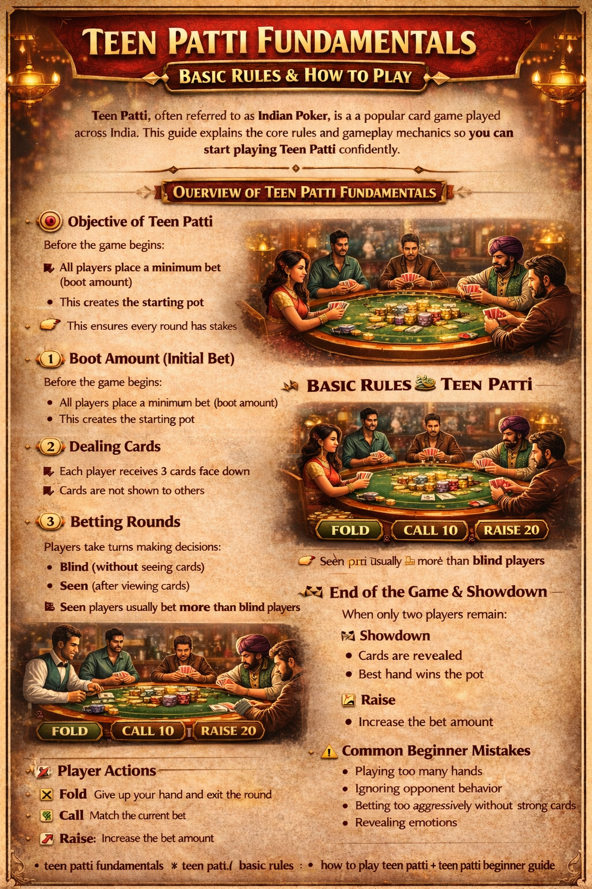

🪶 Introduction
Teen Patti, also known as Indian Poker, is one of the most popular card games in India. It is simple to learn but offers deep strategic gameplay.
This guide will help you understand:
- Basic rules
- Gameplay flow
- Betting system
- Key concepts for beginners
🖼️ Teen Patti Fundamentals Overview

🎯 Objective of Teen Patti
The main objective is:
👉 To have the best three-card hand and win the pot
Each player is dealt three cards face down, and players bet based on their hand strength or bluff.
🃏 Basic Rules of Teen Patti
1️⃣ Boot Amount (Initial Bet)
Before the game begins:
- All players place a minimum bet (boot amount)
- This creates the starting pot
👉 This ensures every round has stakes.
2️⃣ Dealing Cards
- Each player receives 3 cards face down
- Cards are not shown to others
3️⃣ Betting Rounds
Players take turns making decisions:
- Blind (without seeing cards)
- Seen (after viewing cards)
👉 Seen players usually bet more than blind players.
👁️ Blind Player
- Does not look at cards
- Bets lower
- Relies more on bluff and probability
👀 Seen Player
- Looks at cards before betting
- Usually bets higher
- Has more information before acting
🔄 Player Actions
During betting, players can choose:
❌ Fold
Give up your hand and exit the round.
💰 Call
Match the current bet.
📈 Raise
Increase the bet amount.
🏁 Showdown
When only two players remain:
- Cards are revealed
- The best hand wins the pot
⚠️ Common Beginner Mistakes
- Playing too many hands
- Ignoring opponent behavior
- Betting too aggressively without strong cards
- Revealing emotions
❓ FAQ
What is Teen Patti?
Teen Patti is a traditional Indian three-card game that mixes chance, betting, and simple strategy.
What is the boot amount?
The boot amount is the minimum forced bet that all players contribute before a round starts.
What is the difference between blind and seen?
A blind player bets without looking at their cards, while a seen player looks first and usually has to bet more.
Is Teen Patti easy for beginners?
Yes. The game is easy to learn, especially if you start with the basic gameplay flow and player actions.
🧾 Summary
Teen Patti fundamentals are easy to learn:
- Understand the rules
- Learn the betting structure
- Practice observing players
- Stay disciplined
🎯 With practice, you can quickly improve and enjoy the game more.